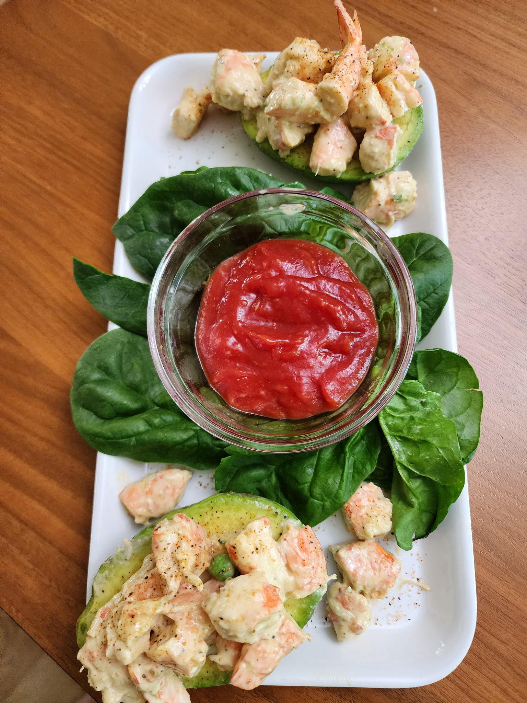

Cajun Shrimp Pasta Salad

Ingredients
- 1½ lb. shrimp, peeled
- ¼ C frozen peas
- 1 stalk celery, finely chopped
- 1 12-oz package medium shell pasta
- 5 tbs mayonnaise or salad dressing
- 80 ml olive oil
- ¼ C balsamic vinegar
- 1 C Zatarain's Shrimp, Crab, and Crawfish boil
- Louisiana hot sauce to taste
- 2 green onions, chopped (divided use, optional)
Directions
- Cook Shrimp: Peel shrimp. Bring 3 qt water and crawfish boil seasoning to a rolling boil (use less seasoning if preferred). Add shrimp, cover, remove from heat, and steep 10 minutes.
- Add Peas: Uncover, add frozen peas, cover again, steep 10 minutes, then drain.
- Cook Pasta: Boil pasta according to package directions; drain and cool.
- Make Dressing: Emulsify olive oil and balsamic vinegar, then fold into the mayonnaise. Add Louisiana hot sauce to taste.
- Combine: Mix shrimp, peas, pasta, celery, onions (if using), and dressing until well coated.
- Chill & Serve: Refrigerate until thoroughly chilled. Garnish with chopped parsley or green onions.
Chef's Notes
- For a lighter alternative, skip the pasta and serve the shrimp salad in an avocado split in half
The Gumbo Page
Michael Fritsche
mbf@fritsche.org